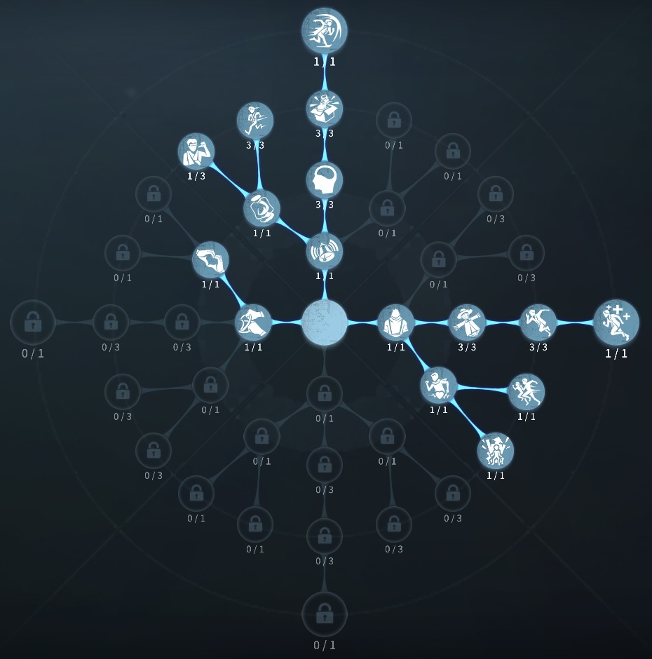
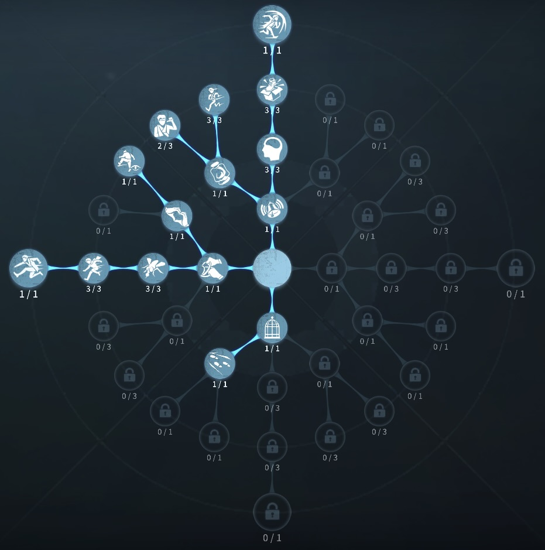

占い師の評価
フクロウによるサバイバー全体の加護
外在特質と特徴
特質1:使い鳥
・占い師は使い鳥を携帯しており試合開始時、使い鳥は全てのサバイバーを巡視し、完了するまで使い鳥を使用することができない。・占い師が1/2/3or４名いるときフクロウの使い鳥の持続時間が8/6/4秒になる。
・12ｍ以内のハンターの姿を見ることで使い鳥のゲージが溜まりゲージが最大25秒分たまると使い鳥を1羽獲得できる。危機一髪中はゲージはたまらない。
・使い鳥が味方のダメージを防いだ時ハンターの攻撃回復速度が30％上昇する
特質2:予言
・ハンターを見るたびに5秒間壁越しでもハンターの位置がわかる特質3:天眼
・ゲーム開始5秒間ハンターのシルエットと位置がわかる。特質4:心労
・自身・味方に対して使い鳥を使用するたびに自身の板・窓の操作速度が10%、解読速度が5%低下する。この効果は3回まで重複する。特徴
自身見方を8秒間ダメージバリアを張ることができる。試合開始時にハンターを見ることができるので、チャットで ハンターを味方に伝えよう!
壁越しでも5秒間ハンターが見えるので、ステイン隠しがきかない。
板窓速度10％ダウンは以外と利いてるので恐怖を気を付けよう!
基本的な立ち回り方
1. 追われた時
後ろ向きチェイスを心掛けフクロウゲージをためていこう！
攻撃に合わせてフクロウを使うのが理想。
しかし、負傷後にフクロウをつけることが多いという人は、慣れるまで早くフクロウをつけ、板窓加速を利用するのも良い。
2. 追われない時
解読に専念しよう！
チャットにて手を貸してチャットが入った場合
フクロウを見てあげよう。
状況にもよるが、無理にハンターに近づいてフクロウを貯めないように
しよう。解読を回すのが無難。
おすすめの内在人格
フライホイール型人格
この内在人格は、防衛反応に最大まで振ることで、フクロウ後の乗り越えデバフを補う人格

中治りなしチェイス型人格
この内在人格は、感覚順応を採用することで占い師の天眼と合わせることでステイン隠しを喰らわない、防衛反応でデバフを補う人格


みんなのコメント